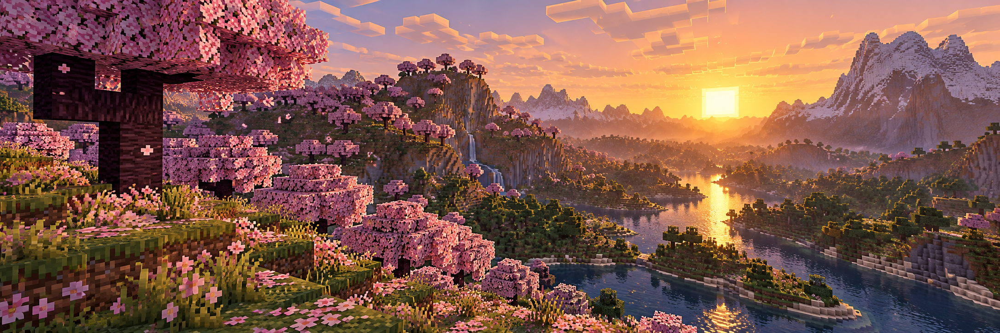
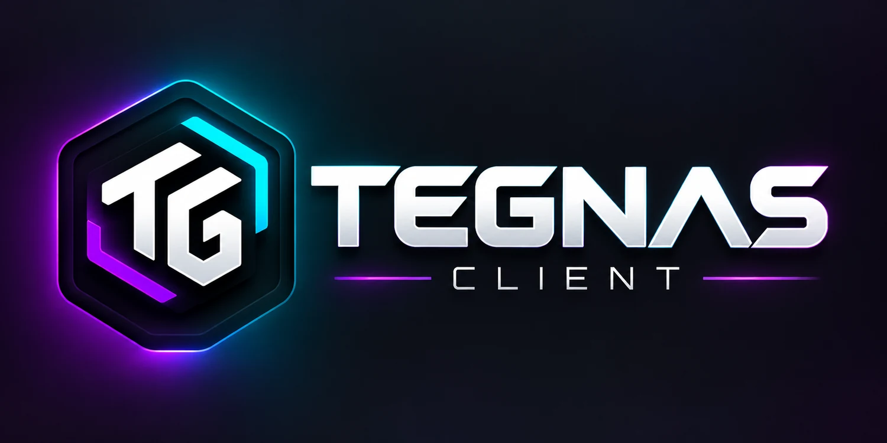

Profile, die zu dir passen.
Eigene Instanzen, Banner und Kontozuordnung. Beim Duplizieren wählst du aus, welche Inhalte mitkommen.

FÜR MINECRAFT: JAVA EDITION
Mach Minecraft zu deinem Minecraft. Mit deinen Profilen, deinen Mods und einem Client, der zu dir passt.
DER TEGNAS CLIENT
Dein HUD, dein Chat, dein Look. Tegnas ergänzt Minecraft um praktische Funktionen und eine Oberfläche, die du selbst gestaltest.
Fabric · Minecraft 1.21.10 & 26.3
Tegnas Bereit für die nächste Runde?
Du Bin dabei. Bis gleich!
⌕ Nachrichten durchsuchen …Wähle eine Farbe für die Vorschau.
DEIN LAUNCHER
Ein Setup für den Server. Eins zum Ausprobieren. Behalte Profile, Mods und Ressourcen an einem Ort – und starte mit dem Profil, das gerade zu dir passt.
Launcher herunterladen →Minecraft 26.3 · Fabric
ALLES FÜR DEIN SETUP
Die kleinen Dinge, die den Weg ins Spiel einfacher machen.
Eigene Instanzen, Banner und Kontozuordnung. Beim Duplizieren wählst du aus, welche Inhalte mitkommen.
Mods über Modrinth verwalten und Updates erkennen. Kompatible Versionen lassen sich beim Versionswechsel übernehmen.
Ressourcenpakete, Shader und Skins verwalten. Die Akzentfarbe verbindet Launcher und Tegnas-Oberfläche.
Neue Launcher-Versionen und ihre Änderungen direkt in der Anwendung ansehen und installieren.
BLEIB AUF DEM NEUESTEN STAND
Launcher mit Tegnas Client v2.0.2-beta
16. Oktober 2026GUT ZU WISSEN
Die Tegnas-Modfunktionen sind für Minecraft 1.21.10 und 26.3 mit Fabric eingerichtet. Weitere Versionen und Vanilla werden separat getestet. Maßgeblich ist die Beschreibung des jeweiligen Releases.
Nein. Der Launcher bringt den Client mit und richtet ihn für die passende Minecraft-Version automatisch ein. Du brauchst keinen zusätzlichen Client-Download.
Für das reguläre Spielen benötigst du Minecraft: Java Edition und dein Microsoft-Konto. Die Anmeldung erfolgt über den offiziellen Microsoft-Login.
Ja. Du kannst deine Profile mit Mods, Ressourcenpaketen und Shadern ergänzen. Die Inhalte müssen zur Minecraft-Version und zum Loader deines Profils passen.

DEIN NÄCHSTES SETUP WARTET.
Tegnas Launcher herunterladen. Profil einrichten. Spielen.
Download für WindowsAndere Releases und Änderungen auf GitHub ↗